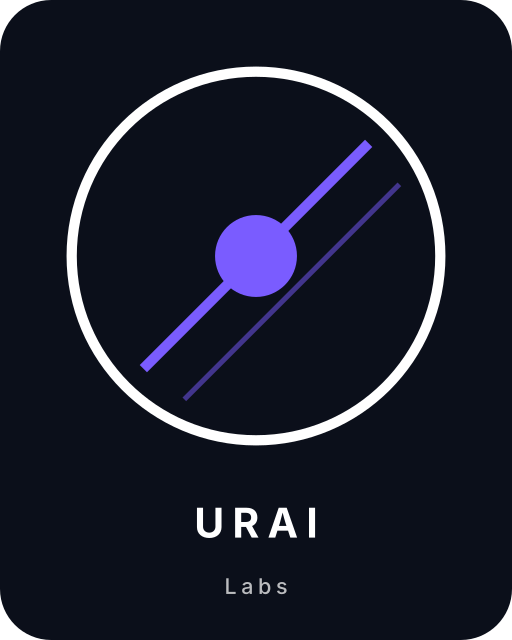

URAI LABS × CHALK & CHEESETHE UNKNOWN
RESEARCH MEDIA PREVIEW · NOT PUBLISHED
EPISODE 01 · MATHEMATICAL MYSTERIES
ONE MILLION NUMBERS.ZERO COUNTEREXAMPLES.
What happens when computers test a million values against mathematical conjectures? We ran bounded calculations, repeated them, and kept the receipts.
REPRODUCIBLE RESEARCH
What the workers checked
1,000,000Collatz starting values
499,999Even numbers tested for Goldbach
8,169Twin-prime pairs through 1,000,000
524Longest Collatz path steps in tested range
Finite tests are not proofs. These results do not solve Goldbach, Collatz or twin-prime infinitude. They are reproducible computations for bounded ranges.
Episode audio is an original synthesized ambient soundtrack, not narration. No footage or discovery is attributed to a third party incorrectly.
Explore. Question. Verify. Discover.
Upcoming: an attributed explanation of Levent Alpöge's 2026 Riemann Hypothesis formal proof, with ongoing human mathematical exposition clearly distinguished from the Lean verification. No claim that URAI Labs created that proof.